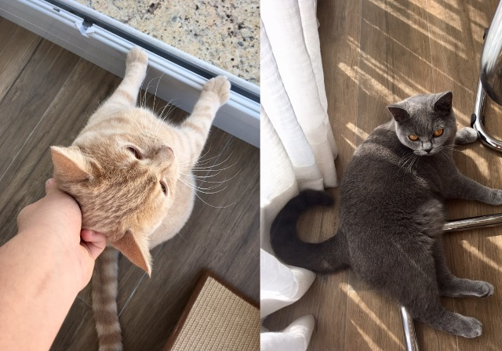

Avenida Paulista
Turists points: MASP, CASA DAS ROSAS, JAPAN HOUSE, ITAÚ CULTURAL.

MASP

CASAS DAS ROSAS
My Life :)
Photography

The photography is one part of my favorites arts, and it includes editing, knowing concept like light,exposion,contrast, and a lot more.
In my schools i already learn a little about the history of this art, it's interesting.
It revolucioneted the way people look and created the cinema, photos with moviment.
.
The same as many subject, the photography has diferrent styles (for example: PB, monocromatic , and a lot of presets for diferrents effects.) and periods in time.
I have a big inspiration of photos that come for my grandparent, he is professional, and because of that to, my family and i have a lot of photos in the holidays and the events of the family.
Cats

Two short hair bristish cats that are adorable, one male (color creamn) and the other female (gray).